05.31.2007 08:55
gardening
I've been working away at the garden with lots and lots of help from
my mom. Earlier this year, I covered the whole garden with black
plastic to keep the weeds from taking over as they did last year. I
also had the distant hope that some solarization would occur killing
seeds in the soil. That didn't work out as the ground thawed out only
a week before I started working on the garden.
For the back row, up against the garage, I did a double digging of the row. This turned out to be a huge amount of work with the soil being really wet. The idea is that you remove one shovel's depth of soil in a strip and then turn over the strip below. Cover that with compost, then move the next shovels worth over on top. Being wet made fluffing the soil really hard. After one row of this, I said forget it! I borrowed the neighbors rototiller and used that on the rest of the garden. I put down about 360 lbs of compost before turning through the soil. I created 4 rows out of the rototilled top soil.
Before adding the compost, I grabbed some soil to do tests on. Looks like I really need more nitrogen to the garden!
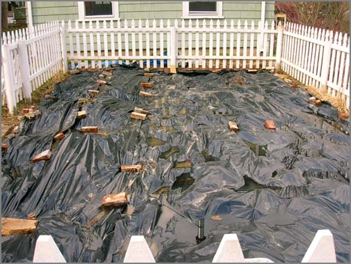
For the back row, up against the garage, I did a double digging of the row. This turned out to be a huge amount of work with the soil being really wet. The idea is that you remove one shovel's depth of soil in a strip and then turn over the strip below. Cover that with compost, then move the next shovels worth over on top. Being wet made fluffing the soil really hard. After one row of this, I said forget it! I borrowed the neighbors rototiller and used that on the rest of the garden. I put down about 360 lbs of compost before turning through the soil. I created 4 rows out of the rototilled top soil.
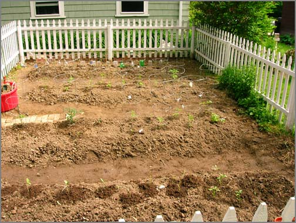
Before adding the compost, I grabbed some soil to do tests on. Looks like I really need more nitrogen to the garden!
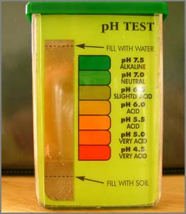
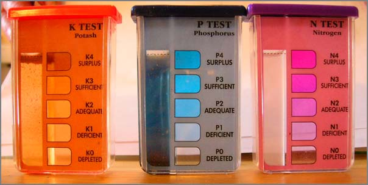
05.30.2007 13:56
Google Maps Street View
Google now has Street View for SF and NY. No Boston yet.
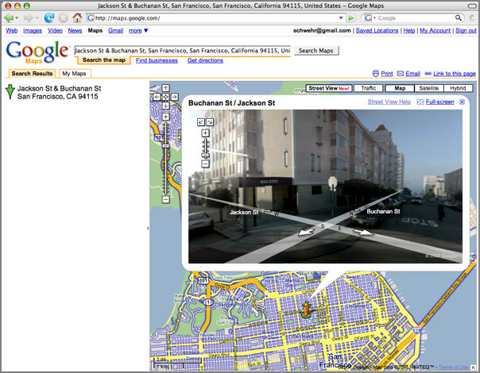
05.30.2007 09:18
Where 2.0 conference
I can't be everywhere at once, so I am not at Where 2.0. I wish I was
there, but at least google earth
blog has converage of some of the talks: Where
2.0 - Ignite and Launchpad
I hope some of this Where 2.0 talks make to ITConversations like they have done with the conference in the past. It is not as good as being there and interacting with all the people, but it does keep me in the loop.
I hope some of this Where 2.0 talks make to ITConversations like they have done with the conference in the past. It is not as good as being there and interacting with all the people, but it does keep me in the loop.
05.28.2007 12:36
CARIS Training - HIPS and SIPS
Last week I took the CARIS training
course. Alexis spent 4 days going through multibeam, sidescan, and
calibration. Unfortunately, I missed the single beam section. We
went through using CUBE for generating surfaces and did a bit of work
required for generating an S-57. Here are three images that I
captured from my screen as I went through the training.
This first image shows a multi-window editing environment for cleaning multibeam data. The top display is a 2-D map view with ship tracks, CUBE derived gridded bathymetry, S-57 vector chart information, and a raster chart from a geotiff. There is a eyeball icon that shows the 3D view eye position that allows the view to be dragged around, which is currently behind the subset editor window. The middle window is a 3D flight through window with shaded bathymetry. You are able to specify a region in the 3D view for editing with the subset editor. The bottom right shows the 3D subset editor window. You can see a cloud of red sounding that are the cause of the spike (aka telephone pole) shown in the 3D window.
This next image shows sidescan sonar viewing. I threw together two screen shots that show before angle varing gain (AVG) in gaudy red/blue and after AVG in gray scale. I did the sidescan processing in a hurry (like 10 minutes) so the results could be much better.
This last image shows the Vessel Editor for specifying how a ship and its sensors are configured. This lets you enter all the paramters from the calibration process. Shown here is just the beginnings of configuring a single transducer multibeam.
A side note: Turns out that SIMRAD systems do not need this file. I need to try loading my EM120 data from Santa Barbara.
Overall, we crammed in a ton of material in 4 days. The training will be a big help for me in my research. Many thanks to Alexis for the class.
This first image shows a multi-window editing environment for cleaning multibeam data. The top display is a 2-D map view with ship tracks, CUBE derived gridded bathymetry, S-57 vector chart information, and a raster chart from a geotiff. There is a eyeball icon that shows the 3D view eye position that allows the view to be dragged around, which is currently behind the subset editor window. The middle window is a 3D flight through window with shaded bathymetry. You are able to specify a region in the 3D view for editing with the subset editor. The bottom right shows the 3D subset editor window. You can see a cloud of red sounding that are the cause of the spike (aka telephone pole) shown in the 3D window.
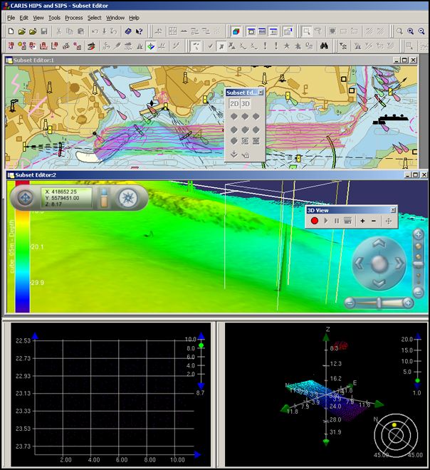
This next image shows sidescan sonar viewing. I threw together two screen shots that show before angle varing gain (AVG) in gaudy red/blue and after AVG in gray scale. I did the sidescan processing in a hurry (like 10 minutes) so the results could be much better.
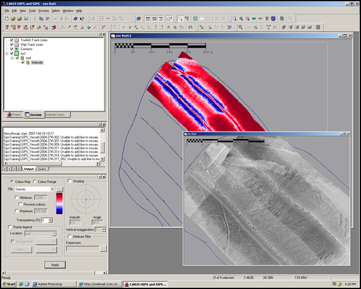
This last image shows the Vessel Editor for specifying how a ship and its sensors are configured. This lets you enter all the paramters from the calibration process. Shown here is just the beginnings of configuring a single transducer multibeam.
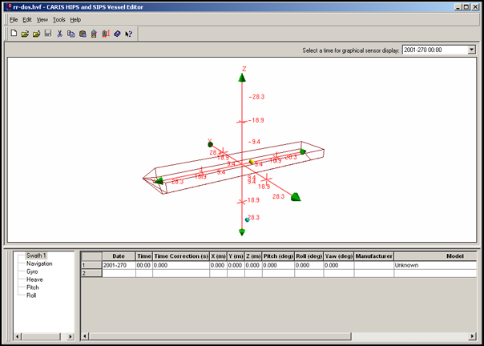
A side note: Turns out that SIMRAD systems do not need this file. I need to try loading my EM120 data from Santa Barbara.
Overall, we crammed in a ton of material in 4 days. The training will be a big help for me in my research. Many thanks to Alexis for the class.
05.28.2007 11:43
proj updated in fink
proj in fink is now up to 4.5.0 in stable and 4.5.0 with the extra
datumgrids in unstable.
http://proj.maptools.org/ and http://pdb.finkproject.org/pdb/package.php/proj
http://proj.maptools.org/ and http://pdb.finkproject.org/pdb/package.php/proj
05.27.2007 10:48
underwater networks
Data come through water has been worked on for many years, but looks
like the navies of the world are now going to push forward on the
research of communicating with what I call AUVs and they call UUVs.
UNDERWATER NETWORKS - Building the web: navies chart paths to underwater networking . As navies around the world plan to proliferate numbers of unmanned underwater vehicles (UUVs) there is a growing clamour for groups of UUVs and sensors to be networked together to revolutionise the underwater battlespace. Just as network-centric and network-enabled operations have become de rigeur above the water, so naval analysts and planners would like to push the benefits and technology below the surface.However, the imminent reality is a little more prosaic [Jane's International Defence Review - 15 May 2007]
05.24.2007 15:47
N-AIS in USCG RDC highlights
USCG Nationwide Deployment The first installment of the highly anticipated USCG Nationwide Automatic Identification System (NAIS) is up and running. During April, the first six NAIS monitoring sites were deployed, tested, and connected to the common operational picture (COP). During the Increment-1 (I-1) build out, a NAIS network will be assembled consisting of about 140 reception-only sites. Many sites that are currently part of the RDC's experimental AIS network will be permanently transferred to the NAIS network. Initial operation and testing of new sites is the responsibility of the Temporary System Operations Center (T-SOC) located at the RDC. The RDC will provide daily analysis of a site's coverage performance. After initial testing is completed, responsibility for operation of each site will be transferred to the NAIS System Operations Center at NAVCen. In addition, the RDC added the live AIS data from the Houston VTS and the Hampton Roads SCC Hawkeye to the live data flow that goes to both the COP and MAGNET systems. Currently, the T-SOC operates and manages these data connections and all the existing connections from the RDC's experimental AIS network. At any given time, there are live reports from over 2000 vessels being transferred from all the reception sites to COP. The goal is to complete the I-1 deployment phase this fall. As sites become operational, their live data flow will be connected to the COP and MAGNET systems and can be viewed using tools such as C2PC. . Project: Nationwide AIS Acquisition (2411) RDC POC: Mr. Lee Luft Sponsor: G-AIS
05.21.2007 14:41
KML podcast
New Features of Google Maps API and Google Earth KML
KML is a file format used to display geographic data in an Earth browser, such as Google Earth, Google Maps, and Google Maps for mobile. KML uses a tag-based structure with nested elements and attributes and is based on the XML standard. Brian McClendon and Lars Rasmussen of Google give both a history and update on the format. They also review the latest enhancements to Google's lineup of map making and map data sharing tools. . Brian first discusses some background of KML, calling it the PDF of GIS. The goal is to allow users to show their data on Google Earth. Lars gives some more specific information on this process, demonstrating that KML is much easier to use than previous methods used to share map data. He also reviews the company's progress and future plans.
05.20.2007 09:03
eqnplus.net
equplus.net has a dictionary of
pre-done equations for LaTeX and Microsoft Word. The site also claims
to have MathML, but I don't see any XML that I can copy.
05.20.2007 08:30
OSGeo Journal
A new interesting journal is out with its first volume: OSGeo Journal - Volume 1 Contents:
* Project Spotlight
o QLandkarte
o Mapbender
o Deegree
o openModeller
* Case Studies
o MapGuide
* Integration Studies
o GRASS-GMT
o GRASS-R
o PyWPS
o TikiWiki
* Topical Studies
o Spatial Relationships
o Evaluation of the OGC Web Processing Service
* Developer Announcements
05.20.2007 08:08
Tidal energy in the sea coast
I don't know what to make about tidal energy in the places like the
seacoast waterways. I worry about the environmental impact and the
hazards to people and vessels in the area. These companies proposing
tidal power need to be much more open and they need to approach the
marine research communities.
NH HB 694 passes senate committee [seacoastnrg.org]
NH HB 694 passes senate committee [seacoastnrg.org]
NH HB 694, which proposes to study the potential for tidal energy development under the Little Bay and General Sullivan bridges on the Piscataqua River, was endorsed by the NH Senate's Energy, Environment and Economic Development Committee yesterday, by a vote of 3-0. Sponsored by NH state representative Tom Fargo (D) of Dover, the bill would establish a commission to identify and collect information, and investigate the necessary regulatory requirements to determine the feasibility of building a system for tidal power generation at the bridge sites. To be included in the study are:
- Permitting standards, including regulatory barriers to permitting of such projects;
- The public's and business community's attitudes toward the project;
- The environmental and wildlife impacts; and
- The cost and benefits of the project and potential for compensation to the state and municipalities.
05.20.2007 08:01
pyro 3.7
I'm still having trouble with getting the fink package setup for pyro.
I tried tweaking my package to the new 3.7 release and it bombed
looking for esd. I'm going to let pyro slide for a bit more time.
Pyro 3.7
Pyro 3.6 worked well for getting the water levels into Pydro last week at Hydro. Sounds weird, eh?
Pyro 3.7
Pyro 3.6 worked well for getting the water levels into Pydro last week at Hydro. Sounds weird, eh?
05.18.2007 19:10
Humpback Whale Killed By Boat
Humpback
Whale Killed By Boat, Scientists Blame Blunt Trauma [Channel 5 Boston]
BOSTON -- It now appears a young humpback whale found dead on a North Shore beach earlier this week was killed by a boat. . Scientists -- some from the New England Aquarium -- believe the animal died of blunt trauma from a large Ship. . The humpback was found on a Rockport beach on Monday. Click here to find out more! . The whale had been spotted off the coast on Sunday and appeared to be healthy.More info is here gloucestertimes.com
05.18.2007 09:50
U.S. Hydro 2007 is done
I'm now heading back home after a very busy conference. An intense
couple of days. Here are a couple images from the events. My first
day here, I attempted to get an AIS Base Station configured in the
Atlantic Marine Center. The setup was in a communications closet and
we ran gps and vhf cables to the roof.
The amount of AIS traffic I started receiving in the Norfolk area was enormous. Here is a screen shot from Google Earth showing the traffic for one night. It looks like the port keeps rolling around the clock.
Here is what the conference area looks like at night. This shot is from Portsmouth, VA looking across the Elizabeth River towards downtown Norfolk.
The NOAA survey vessel Thomas Jefferson (TJ to all you insiders) was in the area for the conference and fleet inspection all at the same time. Impressive that the crew was doing both inspections and tours to the public at the same time. They started first at the Atlantic Marine Center (their normal berth) and then moved over next to the USS Wisconsin for the tours. Barry and Jack took me over to look at the TJ's survey setup (and debug some MS Windows trouble). The OD was nice enough to take time out of her tasks to give me a walk through of the bridge.
For my talk (2nd to the last), I attempted to demo both AIS in Google Earth and then tried to do a quick conversion of a Fledermaus SD file to a Google Earth kml. In my testing beforehand, I was able to do the conversion in about 3 minutes. However, I didn't account for MS PowerPoint using more than 1GB of RAM and causing my laptop to start swapping. I think this is the final straw. I'm going to switch away for powerpoint asap. Power Point is just junk. On my to do list now is to make a camstudio recording of converting an sd to kml and we shall see how fast I can really build a kml. I claim that I can do it in under 2 minutes. Can I pull it off? We shall see!
Then after that I need to figure out this error message that tripped me up:
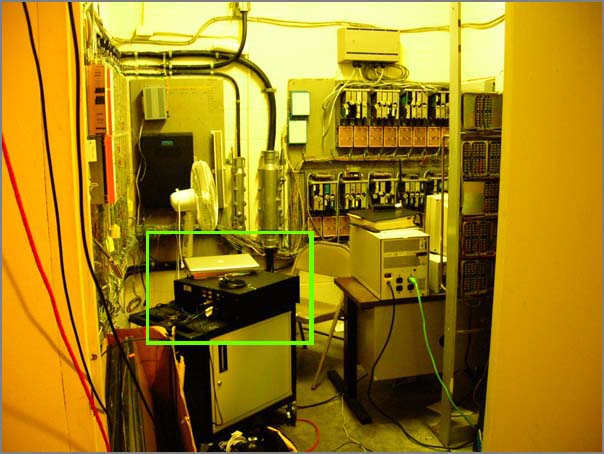
The amount of AIS traffic I started receiving in the Norfolk area was enormous. Here is a screen shot from Google Earth showing the traffic for one night. It looks like the port keeps rolling around the clock.
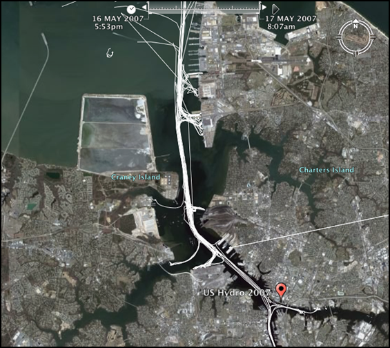
Here is what the conference area looks like at night. This shot is from Portsmouth, VA looking across the Elizabeth River towards downtown Norfolk.
The NOAA survey vessel Thomas Jefferson (TJ to all you insiders) was in the area for the conference and fleet inspection all at the same time. Impressive that the crew was doing both inspections and tours to the public at the same time. They started first at the Atlantic Marine Center (their normal berth) and then moved over next to the USS Wisconsin for the tours. Barry and Jack took me over to look at the TJ's survey setup (and debug some MS Windows trouble). The OD was nice enough to take time out of her tasks to give me a walk through of the bridge.
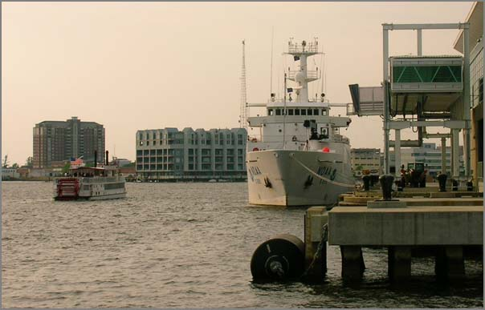
For my talk (2nd to the last), I attempted to demo both AIS in Google Earth and then tried to do a quick conversion of a Fledermaus SD file to a Google Earth kml. In my testing beforehand, I was able to do the conversion in about 3 minutes. However, I didn't account for MS PowerPoint using more than 1GB of RAM and causing my laptop to start swapping. I think this is the final straw. I'm going to switch away for powerpoint asap. Power Point is just junk. On my to do list now is to make a camstudio recording of converting an sd to kml and we shall see how fast I can really build a kml. I claim that I can do it in under 2 minutes. Can I pull it off? We shall see!
Then after that I need to figure out this error message that tripped me up:
./serial_send.py -p /dev/tty.USA49W5b1P1.1 '!xxBBM,1,1,0,1,8,Fs[Ifs?:=2h:ec]dc3?HKI0f3?eFHa4[MGAMO6I2vqG0g,4*32' sending !xxBBM,1,1,0,3,8,Fs[Ifs?:=2h:ec]dc3?HKI0f3?eFHa4[MGAMO6I2vqG0g,4*32 sent at 1179183677.77Got that?
000:55:30.462 Proc_ABM_BBM: PI Chan 2,1179183677.83 000:55:30.462 Proc_ABM_BBM: MMSI = 4294967295, AIS Chan = 3, Msg ID = 8,1179183677.85 000:55:30.464 Proc_ABM_BBM: Sentence 1 of 1,1179183677.88 000:55:30.466 Proc_ABM_BBM: Seq Num 0, 4 Fill Bits,1179183677.88 000:55:30.466 IEC6To8BitBfr: *** AscToIEC6 Error,1179183677.94 000:55:30.468 Proc_ABM_BBM: *** IEC6To8 Err on PI Chan 2,1179183677.94 000:55:30.470 SendABK: PICh 2 AISCh 3 MMSI 4294967295 St 2 Msg 8 SqNm 0,1179183677.98
05.16.2007 08:54
At U.S. Hydro 2007
I'm currently at the U.S. Hydro 2007
conference. I gave a poster last night that went well. It has been a
really busy couple of days. Here is my poster:
And here is a shot of the NOAA vessel Thomas Jefferson:
This morning starts off with the LIDAR session...
THE SECCHI DISK - WHAT IS IT?
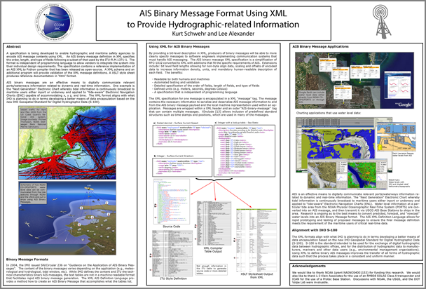
And here is a shot of the NOAA vessel Thomas Jefferson:
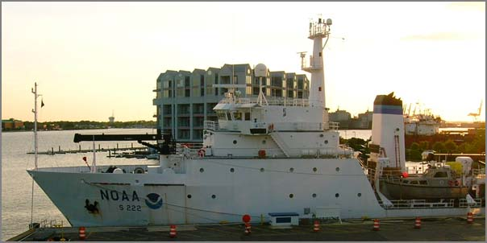
This morning starts off with the LIDAR session...
THE SECCHI DISK - WHAT IS IT?
The Secchi disk is used to measure how deep a person can see into the water. It is lowered into the lake by unwinding the waterproof tape to which it is attached and until the observer loses sight of it. The disk is then raised until it reappears. The depth of the water where the disk vanishes and reappears is the Secchi disk reading. The depth level reading on the tape at the surface level of the lake is recorded to the nearest foot.
05.11.2007 16:19
HP 5000PS printer and the mac
Jim G. and I were struggling on how to get our PPC 10.4.9 Macs
printing on the HP5000PS printer that we have on our hallway. We
tried all sorts of things, but Jim gave me a copy of the latest HP
driver that he had downloaded and while I was waiting for the printer
to figure itself out, I decided to install the driver. Suddenly there
was a flood of network activity and my poster started printing. We
wasted quite a bit of time on that issue today. Seems like 10.4.9
comes with a bad HP print driver for the big plotter/printers.
05.10.2007 08:03
FeatureServer - REST
So I know nothing about REST right now. Here is yet another
interesting bit of software that I do not have time to dig into. FeatureServer
FeatureServer is an implementation of a RESTful Geographic Feature Service. Using standard HTTP methods, you can fetch a representation of a feature or a collection of features, add new data to the service, or delete data from the service. Use it as an aggregator -- post your GeoRSS feeds to it, and then browse them using WFS. Use it as a translator: use the OGR DataSource to load a shapefile and open it in Google Earth. Use it in any way you like.
05.09.2007 19:38
Problems viewing videos on Mac OSX
Today I tried viewing a Microsoft Video 1 (CRAM) AVI on my Mac laptop.
No dice. I got a white screen in quicktime. I tried VLC also with no
luck. Turns out to be Perian 0.5
that gets in the way of some old AVI files playing. Even though Matt
and I made this video on CamStudio just this week, I guess
this is an "old style" of AVI. I move Perian.component from
/Library/Quicktime and restarted the quicktime player. Then the video
played just fine.
Will Perian 1.0 should fix this? The new release is supposed to be out later this month.
Flip4Mac discussion of this issue: FORUMS - Playback - One machine won't play videos that another will
Will Perian 1.0 should fix this? The new release is supposed to be out later this month.
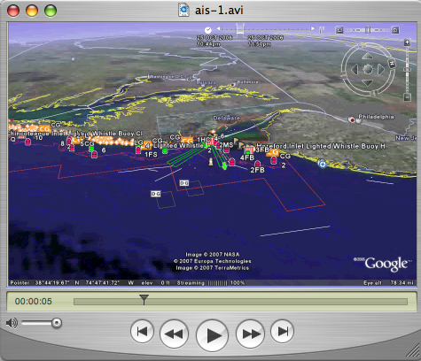
Flip4Mac discussion of this issue: FORUMS - Playback - One machine won't play videos that another will
05.09.2007 15:10
Google Earth now uses the Space Navigator on the Mac
I tried the latest download of google earth and it works for me!
Google Earth 4.1.7076.4458 (beta) Build Date May 6 2007 Build Time 11:19:25 Renderer OpenGL Operating System Mac OS X (10.4.9) Video Driver NVIDIA GeForce 6600 OpenGL Engine (1.5 NVIDIA-1.4.18) Max Texture Size 4096x4096
05.09.2007 13:11
NOAA CAMEO Chemicals
CAMEO CHEMICALS: NOAA'S NEW ONLINE TOOL FOR HAZARDOUS MATERIALS RESPONDERS [noaa.gov]
NOAA image of NOAA Cameo Chemicals Web site.May 9, 2007 - A new online tool for first responders to hazardous chemical accidents was released by the NOAA Office of Response and Restoration. The new Web site, CAMEO Chemicals, is the latest component of NOAA's popular CAMEO (Computer-Aided Management of Emergency Operations) software suite, and the first to be available for use online.
05.08.2007 11:51
MISLE Lite
Calculated Risk
GCN IT Leadership Awards 2007, Coast Guard's Kluckhuhn started under
the radar on vessel-tracking system [gcn.com]
... Without funding, staff, authority or approval, Kluckhuhn set out to develop a system that would exchange information easily and accurately between Coast Guard aviation crews and the Web-based MISLE. . He needed a system with a searchable database that could flag suspicious activity. Kluckhuhn worked with several teams at the National Graduate School in Cape Cod and a group of programmers at the Coast Guard's Operations Systems Center in Martinsburg, W.Va. . "We basically hijacked an application built for Coast Guard boarding officers," he said. . Dubbed MISLE Lite, the system went through 156 iterations in 18 months before it was finalized. The earliest versions of MISLE Lite, which came out in 2002, ran on personal digital assistants, "but they didn't have enough horsepower back then," Kluckhuhn said. Now the system runs on tablet PCs on a Microsoft Windows CE platform. . Using unapproved computers with unapproved software, the Coast Guard Air Station Cape Code tested MISLE Lite and demonstrated its operational requirements and benefits and documented the savings, Kluckhuhn said. ... Kluckhuhn also traveled to the Gulf Coast in the aftermath of hurricanes Katrina and Rita in 2005 to help first responders. He brought 30 ruggedized computers and Portable Flight Planning Software based on the Georgia Institute of Technology's FalconView mapping software. Based on his use of that software, the Homeland Security Department has begun extending it throughout the department. ...Thanks to Phil for pointing me at this article.
05.08.2007 10:46
EarthNC and AIS data
I've tried out dropping AIS data over EarthNC. A static image does
not do this justice, but I don't have a movie just yet.
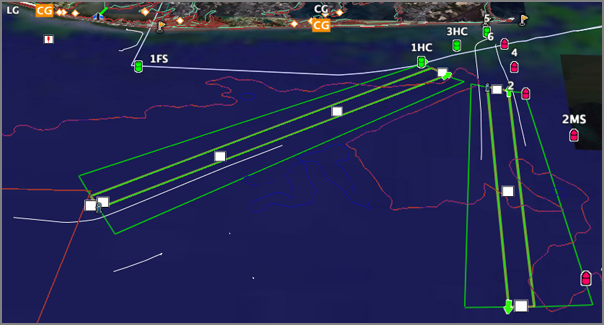
05.08.2007 08:30
NOAA Ports study
NOAA 2007-R417, STUDY SHOWS BIG ECONOMIC BENEFITS OF NOAA PORTS OCEAN
OBSERVING SYSTEM IN HOUSTON/GALVESTON
The Galveston Bay area receives an estimated annual economic benefit of $14.1 to $15.6 million in savings and direct income from the operation of the Physical Oceanographic Real-Time System, according a NOAA sponsored study released this week. The report details the economic benefits of the navigational decision support system, which is in operation at 13 major seaports across the United States. Four additional systems are slated to be added this year in ports along the Gulf of Mexico. ... The single largest benefit is associated with the reduced risk of commercial ship groundings. Combining the U.S. Coast Guard's 1991 Ports Needs Study approach to estimate the cost of groundings with the average number of ship transits, the reduction in grounding risk due to PORTS® data availability results in an avoided cost of $10.5 million annually. PORTS real-time data are also used to decide whether it is necessary to offload oil tankers to reduce their draft before entering the port. Eliminating three such oil transfer, or "lightering," operations a year can result in an estimated savings of approximately $250,000. ... The report was authored by Hauke Kite-Powell, Ph.D., of the Woods Hole Oceanographic Institute Marine Policy Center, who designed the method of identifying as well as collecting and quantifying the data. Dr. Kite-Powell worked extensively with the local user community to gather the required data. The methodology was first applied to Tampa Bay. In that study PORTS showed that the Tampa Bay economy receives more than $7 million a year in savings and direct income from the NOAA system. ...NOTE: I can't find the study on the WHOI Marine Policy Center Publications page. If you have a source for this report please let me know where it can be had!
05.08.2007 07:37
EarthNC on the Mac
Yesterday, I finally got part of what I wanted from EarthNC. I was trying to be
able to see the Norfolk, VA area. EarthNC works hard to obscure which
chart is in which file. This is fine if you are on Windows XP and
willing to live with the standard EarthNC interface. I need the ability to combined
specific layers from each chart. Here is roughly what I did.
First I had to find where it put the files. I forget exactly where that was, but I think it was under Program Files somewhere and then the path included "EarthNC/EarthNC Plus/charts". Then you are faced with this mess:
A few of us spent a bit of time yesterday looking at the EarthNC charts and evaluating what they might be useful for. The analysis applies to what should be on an ECDIS and how an ECDIS should be used/controlled. The main issue was clutter. The electronic charts frequently suffer from clutter issues. There are so many layers that it is hard to find and enable/display the layers that are relevant.
One interesting use of these types of visualizations is for quality control (QC) of the charts. The requirement then becomes that the user must be able to know the provenience/history of both the ENC data and the reference imagery. For example, here is a pier that does not match between the ENC and imagery. Not displayed are the acquisition time of either. Was this pier extended after the imagery was collected or has the pier been shorted? There is no good mechanism in Google Earth for recording the position and possible issue to export back to systems like Pydro. Perhaps the user could create a folder of thumbtacks and export KML that could be parsed by Pydro. Not elegant, but it would work.
It is exciting to see products such as EarthNC come out. What you using EarthNC for and how are you using it?
First I had to find where it put the files. I forget exactly where that was, but I think it was under Program Files somewhere and then the path included "EarthNC/EarthNC Plus/charts". Then you are faced with this mess:
IJ3371LH39.kml RC3848MX56.kml ZS7417FS82.kmz IJ7715HG42.kml RD1595IG14.kml ZS7536HI55.kmz IK7757BI66.kml RD2178ZX31.kml ZS7608ST59.kml IL2229AB74.kml RD2195FB33.kml ZT1872MH86.kml IL3086JG33.kmz RD5351LS55.kmz ZT3836VE52.kmlTo find the Virgina charts, I did a grep on the KML files. The KML files are all small wrappers that call into a KMZ that contains the chart data.
grep US5VA * > list.txtAfter a little work in emacs, I ended up with this list:
US5VA10M - Chesapeake Bay Wolf Trap To Pungoteague Creek MD1138SA94.kml US5VA11M - Approaches To Chesapeake Bay TH3562ZU56.kml US5VA13M - Chesapeake Bay, Cape Charles To Norfolk Harbor VH8718FL19.kml US5VA14M - Chesapeake Bay Cape Charles To Wolf Trap AX8426VE64.kml US5VA15M - Hampton Roads SL0300VN05.kml US5VA16M - Chesapeake Bay YH5047EC02.kml US5VA17M - Norfolk Harbor And Elizabeth River VK1266JV12.kml US5VA18M - Naval Amphibious Base Little Creek HW9495ZS03.kml US5VA19M - Chesapeake Bay, Cape Henry To Thimble Shoal Light FG8373ZD02.kml US5VA21M - Tangier Sound - Norhtern Part FI0171KL48.kml US5VA22M - Potomac Piver Chesapeake Bay To Piney Point AI2440WN57.kml US5VA24M - Chesapeake Bay, Mobjack Bay And York River Entrance AQ7582YA38.kml US5VA25M - James River TE5997SG68.kml US5VA26M - Chesapeake Bay, Mobjack Bay And York River Entrance IZ7673GI75.kml US5VA27M - Potomac Piver Chesapeake Bay To Piney Point CR2272FX93.kml US5VA32M - James River, Jordan Point To Richmond ZW4627HO25.kml US5VA41M - Rappahannock River Entrance CW1176OH84.kml US5VA51M - James River, Jamestown Island To Jordan Point CZ7696FC57.kml US5VA60M - York River Yorktown And Vicinity XD1583YL35.kmlFrom there I had to find in the kml which kmz files I need.
grep -h kmz *.kml | sort -u
AO1430WW20.kmz
AZ2174QY22.kmz
BG7106YP13.kmz
...
ZA1625ZT63.kmz
ZC4894SQ14.kmz
ZR5073PO97.kmz
After a bit of work, I finally figured out that I needed these files:
CT0317TK46.kmz - Approaches to Chesapeake
DO2607QT06.kmz - Chesapeake Bay, Cape Charles To Norfolk Harbor
(north side of the mouth of the bay)
KY2663NC06.kmz - Chesapeake Bay, Cape Henry (coming into the bay)
SN1393YY09.kmz - James (useful to the west)
YH6959XQ14.kmz - Norfolk Harbor and Elizabeth River
ZC4894SQ14.kmz - Hampton Roads
I then loaded these up and nuked a lot of layers, especially the
soundings which can really clutter up the view. Here are my results:
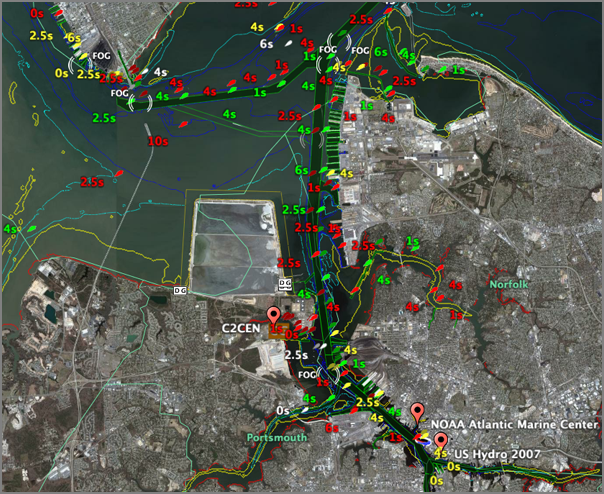
A few of us spent a bit of time yesterday looking at the EarthNC charts and evaluating what they might be useful for. The analysis applies to what should be on an ECDIS and how an ECDIS should be used/controlled. The main issue was clutter. The electronic charts frequently suffer from clutter issues. There are so many layers that it is hard to find and enable/display the layers that are relevant.
One interesting use of these types of visualizations is for quality control (QC) of the charts. The requirement then becomes that the user must be able to know the provenience/history of both the ENC data and the reference imagery. For example, here is a pier that does not match between the ENC and imagery. Not displayed are the acquisition time of either. Was this pier extended after the imagery was collected or has the pier been shorted? There is no good mechanism in Google Earth for recording the position and possible issue to export back to systems like Pydro. Perhaps the user could create a folder of thumbtacks and export KML that could be parsed by Pydro. Not elegant, but it would work.
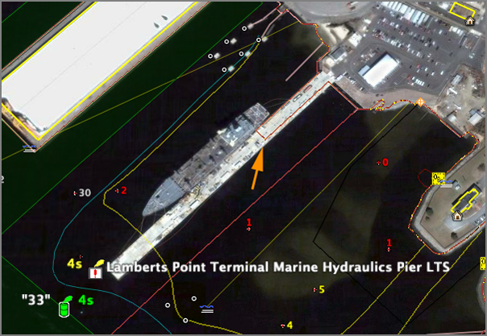
It is exciting to see products such as EarthNC come out. What you using EarthNC for and how are you using it?
05.08.2007 07:07
Tiled display progress continues
Matt is working through the process of configuring the tiled display.
Yesterday, he showed us a movie playing across 4 displays.
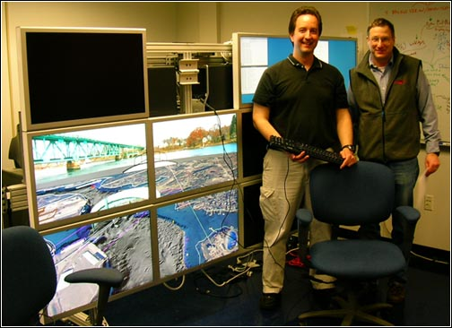
05.07.2007 15:43
opencrs - Marine Protected Areas
Here is an interesting Congressional Research Report (CRS) that was just published on opencrs. Add this to the pile of things that I really need to read.
RL32486 Marine Protected Areas (MPAs): Federal Legal Authority
RL32486 Marine Protected Areas (MPAs): Federal Legal Authority
Recent events, including the release of the President's U.S. Ocean Action Plan and reports issued by the United States Commission on Ocean Policy and the Pew Oceans Commission, have prompted a reexamination of U.S. ocean policy and debate over an "ecosystem approach" to ocean resource management. One proposed mechanism for conserving ocean resources is the Marine Protected Area (MPA), conceptualized as a zoning system for the portions of the ocean under U.S. jurisdiction. This has been highlighted by the recent issuance of the Draft Framework for Developing the National System of Marine Protected Areas (Draft Framework), issued on September 22, 2006, by National Marine Protected Areas Center, part of the National Oceanic and Atmospheric Administration (NOAA). The relative merits and the potentially negative consequences of such an MPA system have been widely discussed. Advocates of additional protection argue that a more comprehensive system as outlined in the Draft Framework should be established. Others argue that the current system is effectively managing ocean resources and that additional restrictions would be economically harmful. Apart from the relative merits of each position, there is some question as to the applicability of current federal law to the oceans and whether new protections could be imposed administratively, without additional legislation. To some extent, regulatory authority will depend upon the nature of the jurisdiction that the United States has claimed over various ocean resources vis-a-vis other nations and vis-a-vis the states. Consistent with international law, the United States claims jurisdiction over marine areas extending 200 nautical miles from its coast and has regulated resources in the zones composing this area under multiple legal authorities. Several current laws which might provide authority for the creation of MPAs are aimed specifically at the ocean environment. The National Marine Sanctuary Program, established by the Marine Protection, Research and Sanctuaries Act, the Magnuson-Stevens Fishery Conservation and Management Act, and the Coastal Zone Management Act each specifically contemplate various levels and forms of aquatic resource protection. Additionally, certain generally applicable laws, while primarily intended for use on land, would arguably support the designation of an MPA in some circumstances. Indeed, U.S. MPAs within the territorial seas have been established as national monuments, national parks, national wildlife areas, and, most recently, as a reserve via executive order. This report will outline U.S. jurisdiction over ocean resources and analyze the existing laws to assess their application to marine environments. It will be updated as necessary.
05.07.2007 06:19
Fink GIS packages
BABA Yoshihiko has created a Fink wiki page on Fink:Packaging:GIS.
Listed so far are grass, gdal, libgeos2, postgis/postgres, and proj.
There are more that need to be added such as pyproj, pcl, and others.
A while back, he created fink-gis on google groups (I am a manager of the list along with BABA Yoshihiko).
A while back, he created fink-gis on google groups (I am a manager of the list along with BABA Yoshihiko).
05.06.2007 21:16
Eel paper published
Another paper in print:
Schwehr, K., N. Driscoll, L. Tauxe, Origin of continental margin morphology: submarine-slide or downslope current-controlled bedforms, a rock magnetic approach, Marine Geology, 240:1-4, pp 19-41, 2007, doi:10.1016/j.margeo.2007.01.012.
Most of my papers are available here: papers/pubs
Schwehr, K., N. Driscoll, L. Tauxe, Origin of continental margin morphology: submarine-slide or downslope current-controlled bedforms, a rock magnetic approach, Marine Geology, 240:1-4, pp 19-41, 2007, doi:10.1016/j.margeo.2007.01.012.
Most of my papers are available here: papers/pubs
05.06.2007 18:32
trouble with Apple Security Update 2007-004 (PPC) 1.1
Today I update my 4xG5 mac with Apple's Security Update 2007-004
(PowerPC) 1.1. Something about this patch made me nervous, and my
guess was right. I had no problem with it on my G4 laptop, but with
my main desktop, after the patch installed the machine tried for 5
minutes to shutdown with the blue screen with the spinning black bars
going and going. The then tried a reboot a couple times holding down
shift and cmd-v, neither of which did anything. I only had the black
on blue spinning doom of the bootup. I HATE boot screens that
obscure what is happening. I know linux/unix style boot text scares
many people, but how am I supposed to diagnose a screen with no
information other than it is stuck. Stuck doing what???
I ran to another room and stole an USB keyboard from a PC as I don't trust that the OS is in a state where it even sees the keyboard. Still nothing. Then I held down 't' on boot to see if I could get a firewire boot. What did I get, but a normal bootup sequence to the login screen with a request for configuring the new keyboard. WTF? I unplugged the keyboard and went on with life. I really don't trust bluetooth devices and I'm sure it is not to hard for someone smart to sit around pulling my keystrokes out of the air.
30 minutes after hitting the okay to reboot button from the update, I was finally back to a working mac. I lost 30 minutes of logged data. Grr. I can live with a couple minute reboot cycle, but 30 could cause problems with my processing of the time series data that I am collecting.
I ran to another room and stole an USB keyboard from a PC as I don't trust that the OS is in a state where it even sees the keyboard. Still nothing. Then I held down 't' on boot to see if I could get a firewire boot. What did I get, but a normal bootup sequence to the login screen with a request for configuring the new keyboard. WTF? I unplugged the keyboard and went on with life. I really don't trust bluetooth devices and I'm sure it is not to hard for someone smart to sit around pulling my keystrokes out of the air.
30 minutes after hitting the okay to reboot button from the update, I was finally back to a working mac. I lost 30 minutes of logged data. Grr. I can live with a couple minute reboot cycle, but 30 could cause problems with my processing of the time series data that I am collecting.
05.06.2007 09:04
Missed conference - Information Processing in Sensor Networks
This would have been a fantastic conference for several of us from
CCOM to attend. Unfortunately, we found out about this after the
conference was already done.
Information Processing in Sensor Networks
Here is an interesting list of papers to go along with the topic of the conference. cse521s_reading [wustle.edu]. I can't seem to find online copies of the conference presentations or pubs.
Information Processing in Sensor Networks
Here is an interesting list of papers to go along with the topic of the conference. cse521s_reading [wustle.edu]. I can't seem to find online copies of the conference presentations or pubs.
05.06.2007 08:57
tiled display
Matt is back consulting at CCOM. He is currently looking to how we
should configure the computers that drive the display. Based on a
recommendation from Atul N., we are give a go of setting up Rocks Clusters
which is a CentOS based linux distribution that has a Viz cluster
varient ("Viz Roll").
This is a very cheesy video about Rocks. Would have been nice if they had used a tripod and the apps are less than exciting but it does show what this type of system can do. [mov]
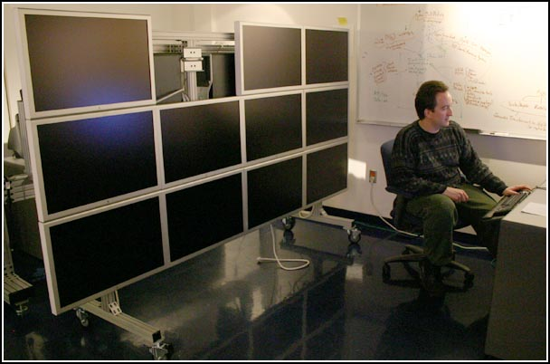
This is a very cheesy video about Rocks. Would have been nice if they had used a tripod and the apps are less than exciting but it does show what this type of system can do. [mov]
05.06.2007 08:42
Photoshop 3 beta expired
Doh! My license for Photoshop CS3 Beta just expired. I do intend to
buy CS3, but I was holding off until I can figure out which one to
get. Talk about confusing. Back to CS2. CS3 is definitely much
improved.
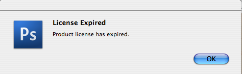
05.05.2007 17:26
OpenDMTP and OpenGTS - Location Based Services
http://www.opendmtp.org/
The "Open Device Monitoring and Tracking Protocol", otherwise known as OpenDMTP, is a protocol and framework that allows bi-directional data communications between servers and devices (clients) over the Internet and similar networks. OpenDMTP is particularly geared towards Location-based information (LBS) such as GPS, as well as temperature and other data collected in remote-monitoring devices. OpenDMTP is small, and is especially suited for micro-devices such as PDA's, mobile phones, and custom OEM devices.and http://www.opengts.org/
The "Open GPS Tracking System" (OpenGTS) is the first available open source project designed specifically to provide web-based GPS tracking services for a "fleet" of vehicles. OpenGTS, a companion project to OpenDMTP (http://www.opendmtp.org) , was developed from the need for a simple web-based platform that can provide GPS tracking for entry-level commercial fleet enterprises, however OpenGTS is highly configurable and scalable to larger enterprises as well.Tracking a fleet of vehicles... I know they are focused on trucks, but is there anything here that would help with ships and sensor networks in harbors? How could this work with and extend AIS? I see that they are under the Apache license.
05.05.2007 15:54
Open Courseware - Open Web Mapping
GEOG 585: OPEN WEB MAPPING. [psu.edu]
GEOG 585: OPEN WEB MAPPING. Design, development, and implementation of web mapping applications using OGC standards and open source software. Prerequisites - GEOG 485: GIS Programming and Customization or demonstrated experience in a programming language. . Open Web Mapping involves the design, development, and deployment of interactive mapping tools distributed via the World Wide Web and using "open" (non-proprietary, community-developed) standards and software code. This advanced course, specifically designed for geospatial professionals enrolled in Penn State's Master of GIS professional degree program, helps students acquire the knowledge and skill required to design, plan, and implement customized web mapping solutions using open standards and open source software. The course is organized around online lectures, quizzes, activities, a case study, and a final capstone project. Each lesson includes associated readings and discussions about concepts and tools in open web mapping. These assignments are designed to help students progress towards successfully completing the final project. . The course prepares students to design, develop, and implement custom web mapping applications using open standards and open source software. On completion of the course, students will be able to build and deploy a complete web mapping solution including selecting the spatial data, the server and client software. Students will be able to determine which type of mapping server is required for their needs and to explain why choosing an open standard based solution is better than a proprietary solution. The course will cover a variety of open source software packages for web mapping and will provide pointers to commercial solutions where appropriate.
05.05.2007 11:25
Marine Geology paper about to be in print
My paper is really close to being out... just a few days away.
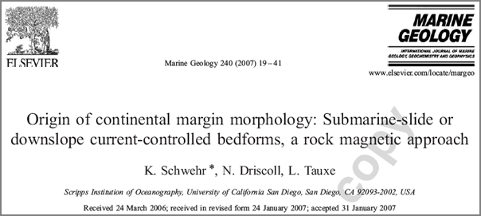
Origin of continental margin morphology: Submarine-slide or downslope current-controlled bedforms, a rock magnetic approach
Morphological features observed in both swath bathymetry and seismic reflection data are not unique, which introduces uncertainty as to their origin. The origin of features observed in the Humboldt Slide has generated much controversy because the same features have been interpreted as a submarine failure deposit versus current-controlled sediment waves. It is important to resolve this controversy because similar structures are observed on many continental margins and the origin of these features needs to be understood. Anisotropy of magnetic susceptibility (AMS) measurements on sediment samples acquired from the Humboldt Slide reveal that the top ~8 m have not experienced post-depositional deformation. This suggests that these features are formed by primary deposition associated with downslope currents. Using the same AMS technique on a core acquired north of the Humboldt Slide in a region with no geophysical evidence for post-depositional deformation, we were able to identify a ~1 m thick deposit that appears to be a small slump.
05.04.2007 08:41
svn:executable
Doing the equivalent of "chmod +x"/"chmod -x" or "chmod 755"/"chmod
644" on a file to make it (not) executable in svn (subversion) is a bit
confusing. I accidentally set the execute bits on a bunch of data
files which is a bit annoying. This was my first time trying to
remove the execute bit. It is easier to make a executable than
removing exacutability (is that a word?):
svn propset svn:executable ON foo.scriptBut the obvious match does not work.
svn propset svn:executable OFF foo.datThat does not do what you expect. What you want is:
svn propdel svn:executable foo.dat svn update svn commit -m "no longer executable" foo.datMaybe someday I will remember without have to look this up.